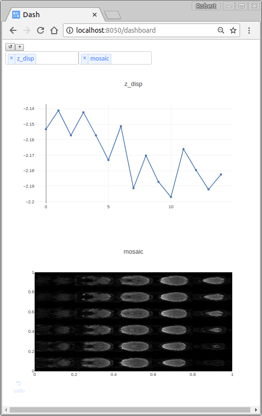

Dashboard¶
The dashboard allows you to configure real-time visualizations of data.
Configuring the dashboard¶
To make a data element available for real-time visualization, you need to add a SendToDashboard preprocessing step to your pipeline. The kwargs must include:
name: the name of the data (used for display only)plot_type: One of the followingbar: a bar plottimeseries: a timeseries plotarray_image: an image representation of a 2D arraystatic_image: an image stored as a.png,.jpg, or other standard image format
Here is an example of preprocessing steps that add the z-displacement and image mosaic to the dashboard:
- name: send_motion_parameters_z
class_name : realtimefmri.preprocess.SendToDashboard
kwargs: { name: z_disp, plot_type: timeseries }
input: [ z_displacement ]
- name: send_mosaic
class_name: realtimefmri.preprocess.SendToDashboard
kwargs: { name: mosaic, plot_type: array_image }
input: [ volume_mosaic ]
Using the dashboard¶
After starting the web interface, visit http://localhost:8050/dashboard. Press the “↺” button to refresh the list of available data elements, then press the “+” button to add a new figure. A multi-dropdown menu will appear that allows the selection of one or several data elements to display.
